All work
Keells redesign
A concept redesign of the Keells supermarket app: a fresher look, simpler navigation and a smoother path from basket to checkout. Shared on LinkedIn, it reached over 100,000 people.
An unofficial concept I designed on my own. It is not affiliated with or endorsed by John Keells Holdings or Keells.
- Role
- UX/UI designer
- Type
- Redesign concept
- Platform
- Mobile app
- Reach
- 100k+ impressions, 2k+ reactions


Overview
The brief I set myself
The Keells app looked dated and gave people little reason to explore. I redesigned it to feel modern and easy, for shoppers who would rather order than queue.
What was wrong
- Dull colours, weak contrast and tired fonts.
- A cluttered layout that made navigation hard.
- Few reasons to browse beyond the search bar.
What changed
- A cleaner home page with simpler navigation.
- Distinct categories with appetising visuals.
- A smoother path from basket to checkout.
100k+LinkedIn impressions
2k+reactions
1concept, designed end to end
User flow
From opening the app to paying
- I mapped the journey first: onboarding, browsing, the basket and checkout.
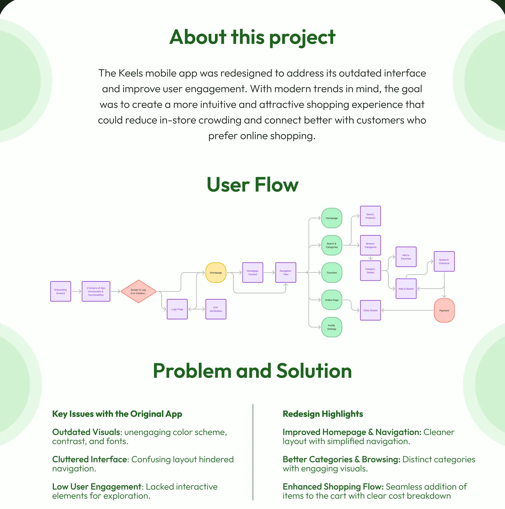
Screens
Onboarding
- A splash in the store's green opens the app.
- Two illustrated steps show what it does: shop groceries from home, and pay online with saved cards.
- Skip is always there for people who already know the app.
- Sign in with a mobile number, or continue as a guest and browse first.
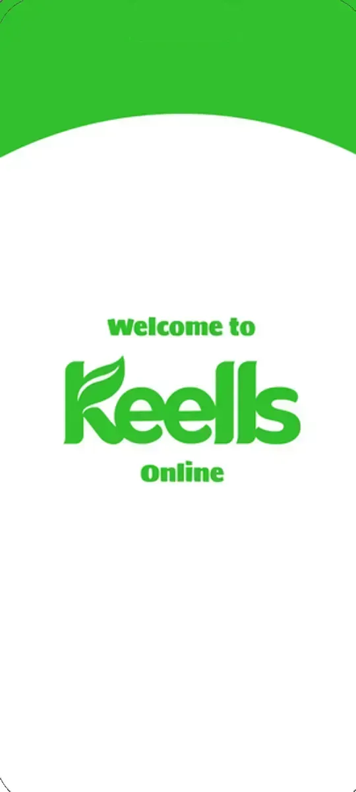
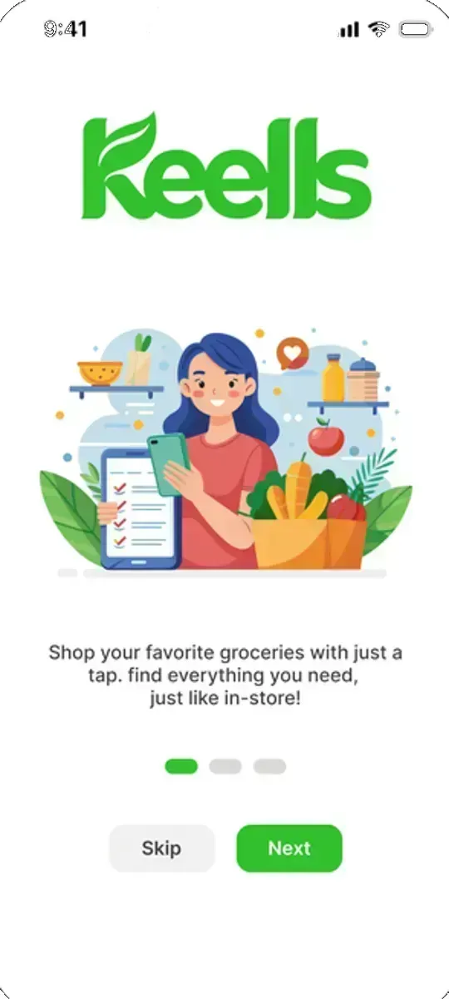
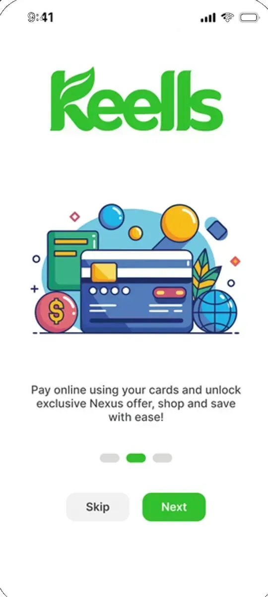
Home and browsing
- Home leads with the delivery address, the week's offer and categories, then fruit and bills.
- Favourites keeps regular buys in one list, with a quantity stepper on every row.
- Category pages like Fish show the price per kilo and add in one tap.
- A light filter by price and category, applied with one button.
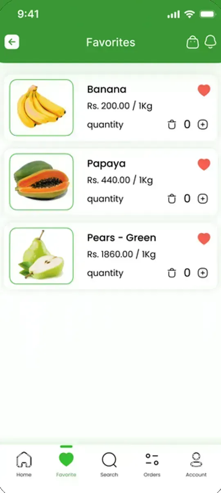
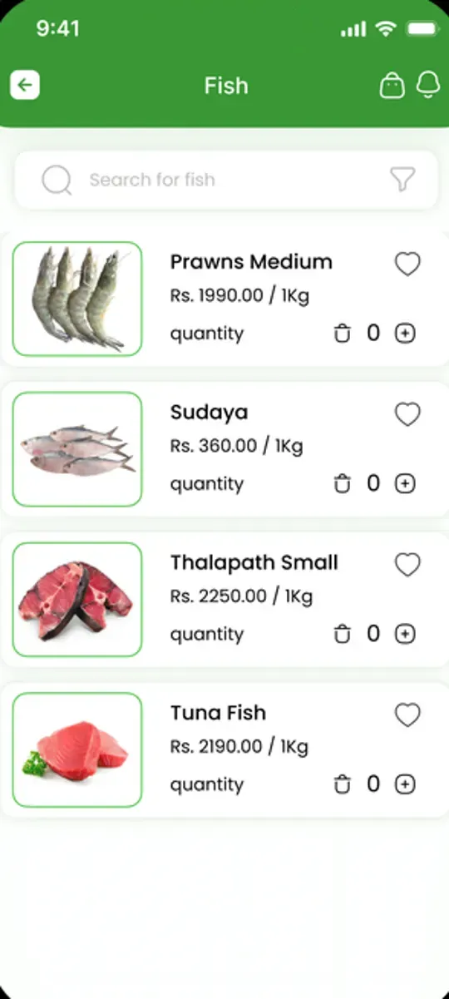
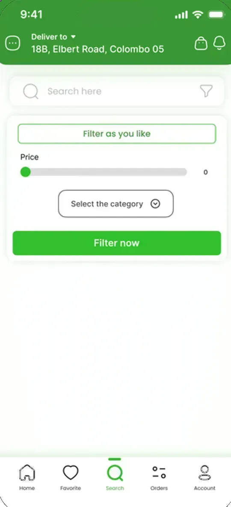
Basket
- Items added from Home collect in a mini basket with a running total.
- In the basket, quantities change in place and the subtotal, delivery and total update together.
- Clear or save the cart, with suggested items just above checkout.
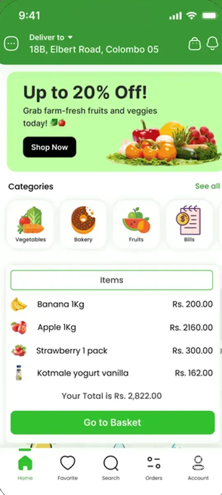
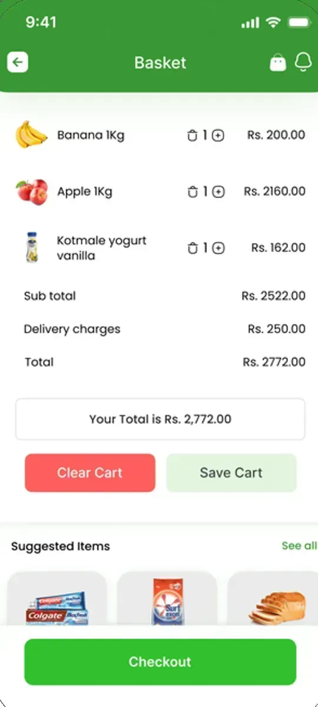
Delivery, payment and order
- Delivery and payment on one screen: contact, address, order summary and payment method.
- A short Confirm and Pay dialog before the order is placed.
- A clear success message once the order goes through.
- Orders shows the order number, status and charges, with Cancel and View items.
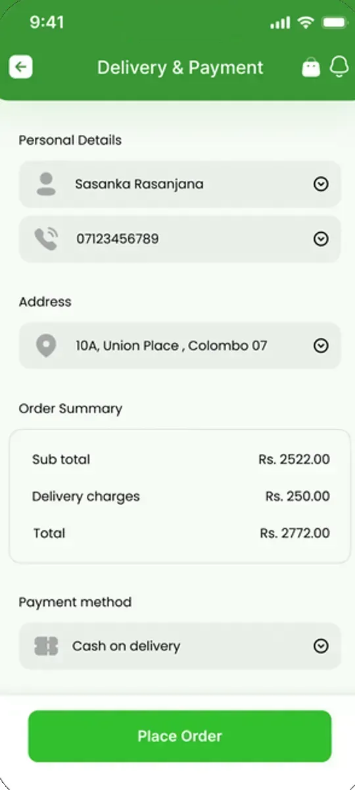
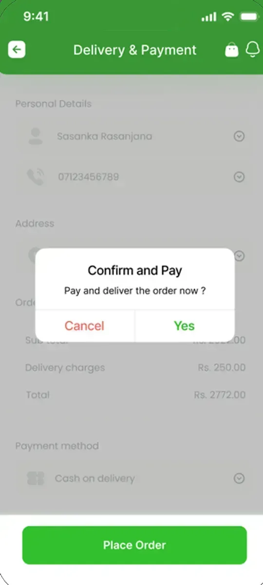
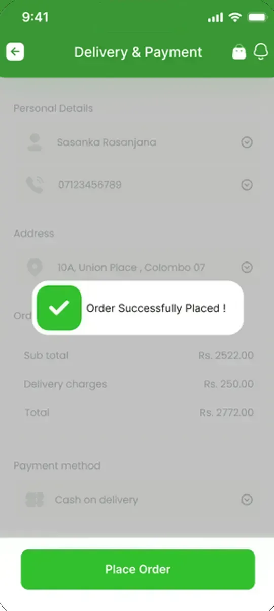
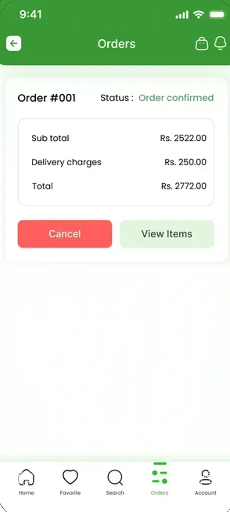
Look and feel
Colour and type
- Keells green, made brighter, with Inter and Poppins.
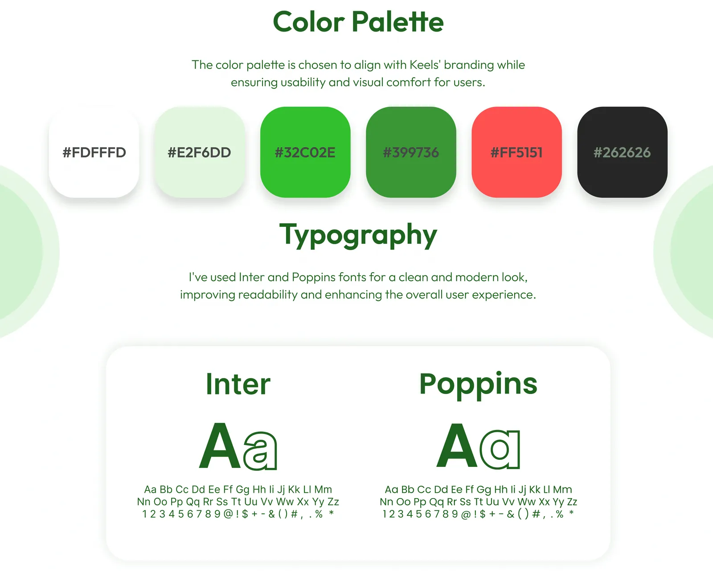
UI kit and prototype
- Reusable components and a clickable prototype.
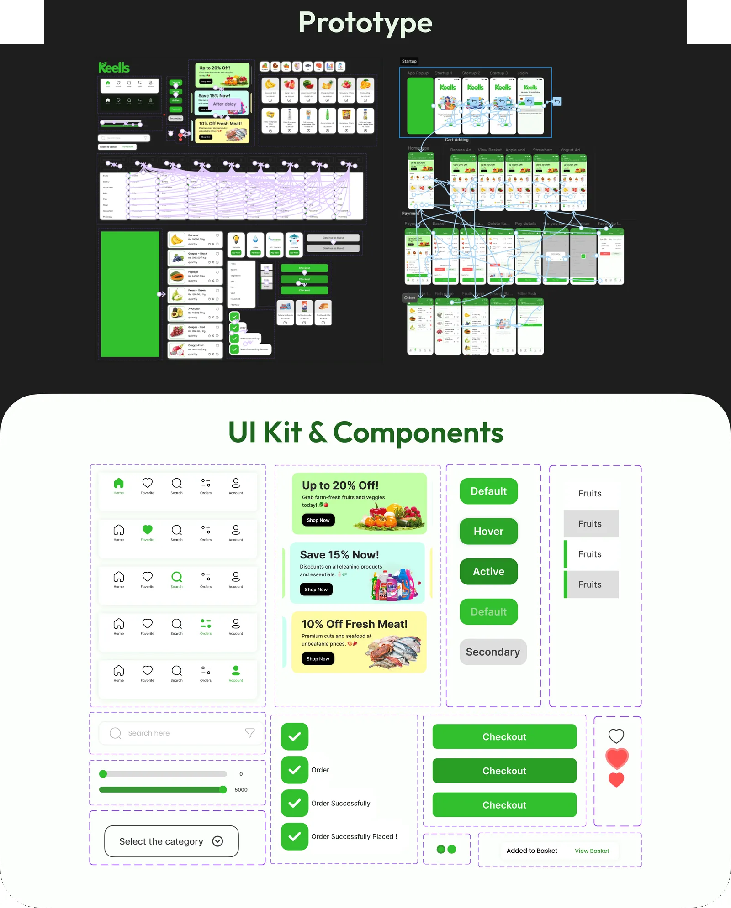
Final look
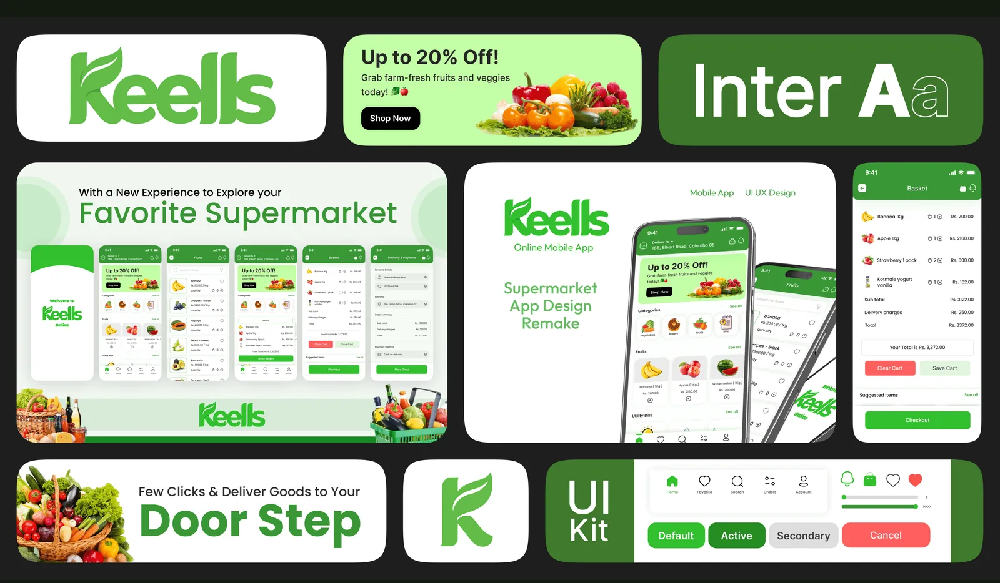